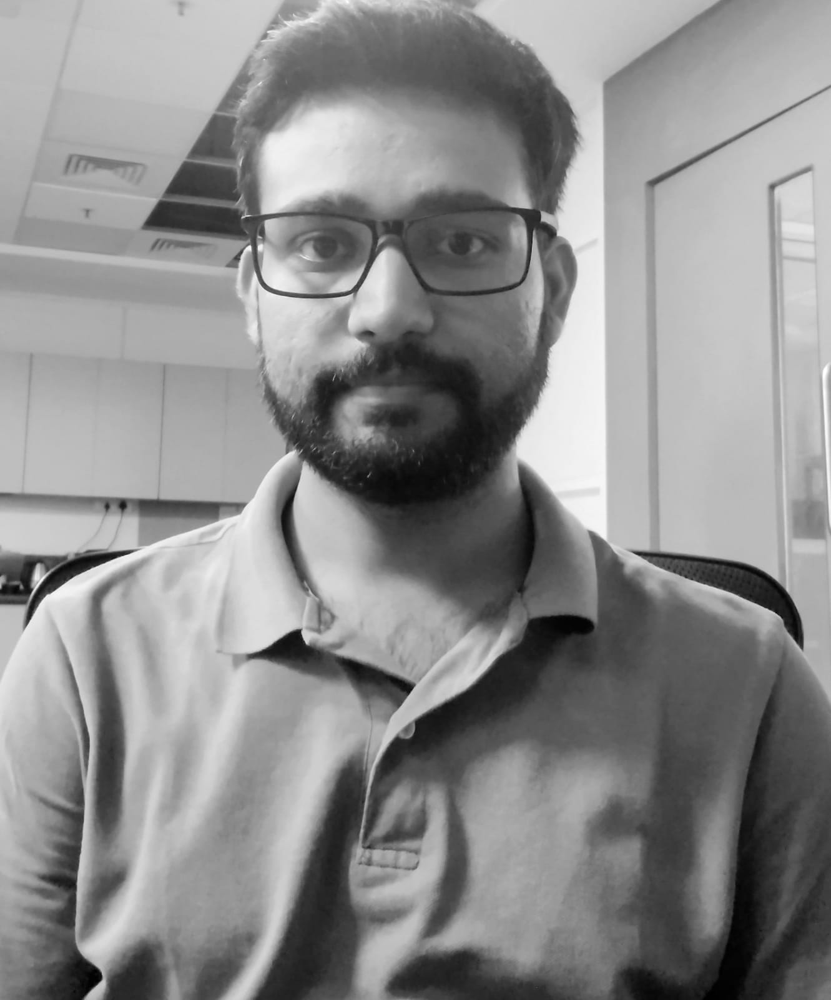

Welcome!
I am a Ph.D. candidate in the Department of Energy Science and Engineering at IIT Bombay, working under the supervision of Prof. Karthik Sasihithlu. My research focuses on quantum many-body physics and open quantum systems, particularly in efficient electronic excitation transport in complex photosynthetic systems.
Download CV (PDF)


Research Interests
- Electronic excitation dynamics in quantum photosynthesis.
- Open quantum systems theory and environment-assisted transport.
- Quantum coherence and energy transfer efficiency.
- Polaritonic and cavity-mediated transport phenomena.
Publications
- A. K. Upadhyay and K. Sasihithlu, “Role of quantum coherence in electronic excitation transport,” J. Phys. Chem. B, 2024.
- A. K. Upadhyay et al., “Incoherent Born-Markov model for multisite energy transfer,” arXiv:2401.12345.
Education
- Ph.D. in Energy Science and Engineering, IIT Bombay (2019–present)
- M.Sc. in Physics, University of Delhi (2017)
- B.Sc. (Hons) in Physics, Atma Ram Sanatan Dharma College, University of Delhi (2014)